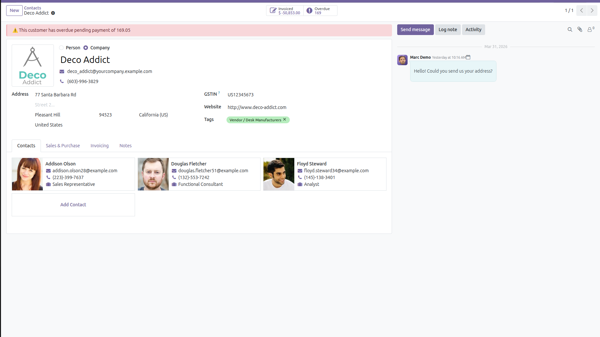
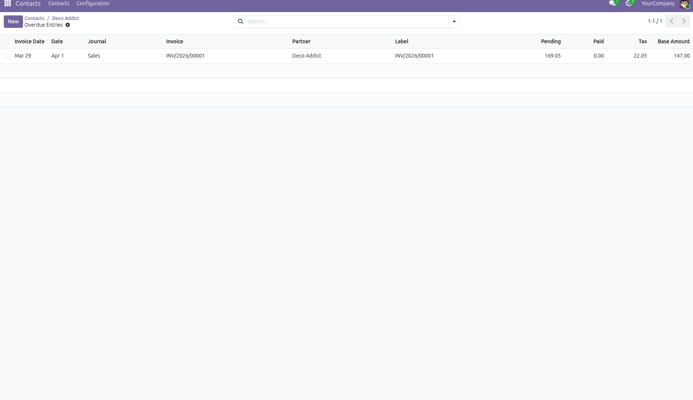
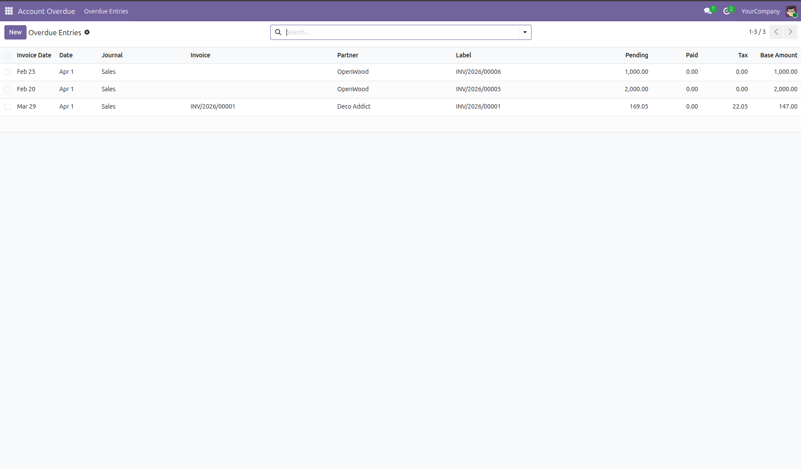
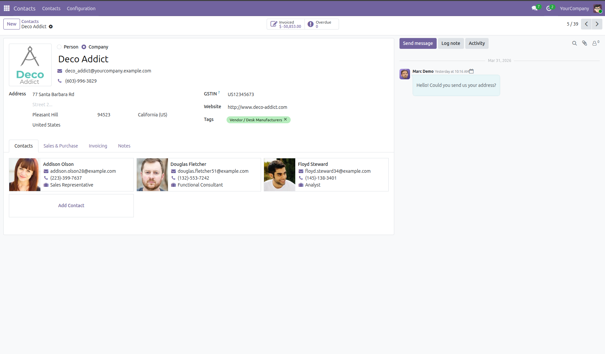

Inom Account Overdue Management is a professional Odoo solution designed to monitor overdue customer invoices, track payment history, and improve collection management. This module helps finance teams maintain complete visibility over pending customer dues and payment activities.
With this module installed, every overdue customer invoice is automatically tracked, and each payment made against the invoice is recorded as a separate history entry. The module also provides customer-level overdue alerts and smart button access for quick financial follow-up.
Managing overdue customer payments manually can lead to missed follow-ups, inaccurate records, and delayed collections. Inom Account Overdue Management automates overdue tracking and payment history maintenance to ensure better financial control and customer account visibility.
1. Create and validate a customer invoice in Odoo.
2. Once the due date passes, the invoice is automatically marked as overdue.
3. Every payment made against the invoice creates a separate history entry.
4. Customer profile displays overdue warning until payment is fully cleared.
5. Smart button provides direct access to overdue payment records.
Follow the below steps to use the Inom Account Overdue Management module. Each step is explained with a screenshot for better understanding.
Go to Contacts and open the customer record for whom you want to check overdue invoices. If any invoice is pending after the due date, the customer profile will display a red overdue warning alert.

After clicking the smart button, the system opens the overdue history list. Here you can track every payment made against the invoice separately, including remaining balance and paid amount.

Each payment entry is recorded separately. For example, if the customer pays multiple times in a day, every payment is saved as an individual history record.

Once the full payment is completed and no amount remains due, the red overdue warning is automatically removed from the customer profile.

For support, bug reports, or customization requests, please contact us:
Email: info@inomerp.in
For demos, customization, or enterprise support, connect with our team:
https://www.inomerp.in/contactus